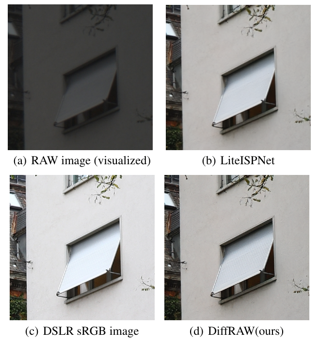
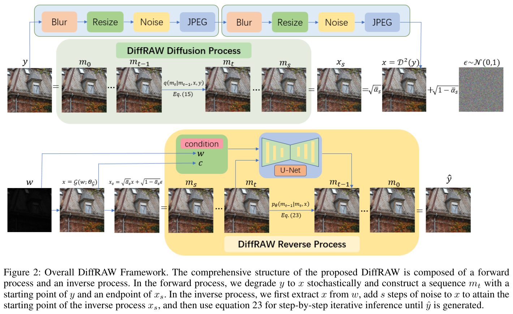
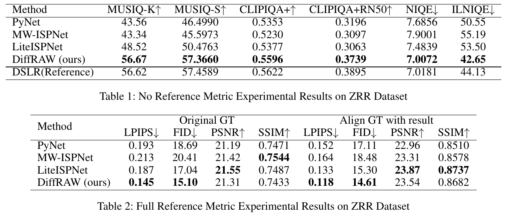
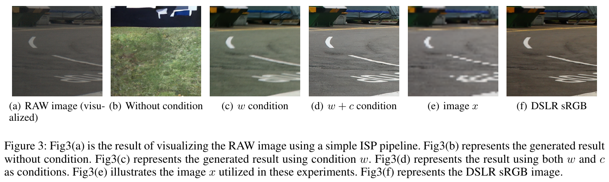
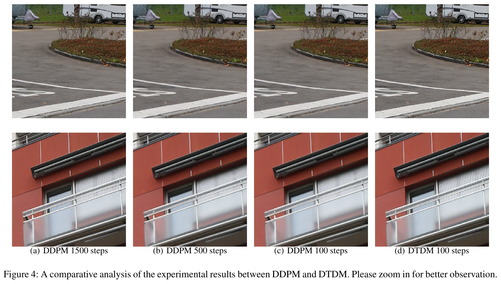

DiffRAW: Leveraging Diffusion Model to Generate DSLR-Comparable Perceptual Quality sRGB from Smartphone RAW Images
⚠️ 代码说明：DiffRAW 没有公开官方代码或权重（查过：论文全文无 github 链接；无 arXiv 版本；GitHub 搜 "DiffRAW" / "Domain Transform Diffusion Method" 只能搜到一个同名但无关的 Lightroom 参数优化项目 dheera/diffraw）。本页 repo-liteisp/… 的代码全部出自 DiffRAW 所依赖的 LiteISPNet 官方仓库 cszhilu1998/RAW-to-sRGB（ICCV 2021，commit b9e3854），不是 DiffRAW 自己的代码；DiffRAW 自身的训练与采样逻辑以带标注的等价伪代码给出，依据是论文 Algorithm 1/2。

1. 出发点 (Motivation)
手机传感器小、镜头孔径小，同一个场景拍出来，细节、噪声、动态范围都不如单反。「学习式 ISP」想做的是：输入手机 RAW，直接输出看起来像单反拍的 sRGB。训练数据是成对的「手机 RAW ↔ 单反 sRGB」，典型的是 ZRR（Zurich RAW to RGB：华为 P20 RAW 对佳能 5D Mark IV sRGB）。
论文认为这个任务有三个难点（§Introduction）：
- 细节差距，问题本身是病态的。手机 RAW 里本来就没有单反那么多细节，确定性网络（PyNET、LiteISPNet）用 L1/SSIM/VGG 回归，只能输出「各种可能细节的平均」，结果偏糊。补出来的细节只能靠生成。
- 数据对空间不对齐。两台设备不可能同一位置同一时刻拍，ZRR 只用 SIFT + RANSAC 粗对齐，还存在视差和局部位移。直接用像素损失训练，网络会学到模糊和像素偏移。
- 颜色映射不稳定。环境光、相机参数各不相同，RAW 到单反 sRGB 的颜色关系本身就不是一个固定函数，网络容易学出色偏。
前两点是 LiteISPNet 那一代已经在处理的问题（光流对齐 + GCM 颜色校正）。DiffRAW 的新问题是：确定性网络已经能把颜色和位置做对，那能不能在它的基础上用扩散模型把「被平均掉的细节」生成回来，同时不让扩散模型破坏颜色和位置？
这正好对应本专项「手机照片 → 相机画质」的核心分工：颜色由可控的确定性方法负责，生成模型只补高频纹理。 DiffRAW 是这个思路最早、最直接的一次落地。
ISP
图像信号处理流水线：把传感器原始数据经过去马赛克、白平衡、色彩校正、去噪、gamma 等步骤，变成人眼可看的 sRGB 图。
RAW / Bayer
传感器直出的数据，每个像素只记录 R、G、B 中的一种颜色（RGGB 马赛克排列），线性、没做任何色彩处理。
学习式 ISP
用一个神经网络代替整条手工 ISP，直接学「RAW → sRGB」映射；本文的 PyNET、MW-ISPNet、LiteISPNet 都属于这类。
ZRR
Zurich RAW to RGB 数据集：华为 P20 RAW 与佳能 5D Mark IV sRGB 成对，448×448 patch，训练 46.8k 对、测试 1.2k 对。
w / y / x / c
本文记号：w 是手机 RAW，y 是单反 sRGB 真值，x 是「低质量版 sRGB」（训练时 = y 的合成退化，测试时 = LiteISPNet(w)），c 是颜色-位置条件，取 c = x。
D²（二阶退化）
Real-ESRGAN 的高阶退化模型：模糊 → 缩放 → 加噪 → JPEG，重复两轮，用来从高清图合成逼真的低质图。
DTDM
Domain Transform Diffusion Method，本文提出的扩散过程：前向时每一步既加一点噪声，又往 x 方向退化一点；反向时每步既去噪又往 y 方向「升级」一点。
GCM
LiteISPNet 的全局颜色映射模块：用单反图做引导，把手机 RAW 的颜色调成和单反一致，只在训练时用于对齐真值。
LPIPS / FID
有参考的感知指标：LPIPS 比较深度特征差异，FID 比较两组图片的特征分布距离，都是越低越好。
MUSIQ / CLIPIQA / NIQE
无参考画质分：不看真值，只看单张图「像不像高质量照片」；MUSIQ、CLIPIQA 越高越好，NIQE、ILNIQE 越低越好。
2. 方法 (Method)

整个方法可以拆成三个组件：RAW 条件 w、颜色-位置保持条件 c、DTDM 扩散过程。前两个决定网络「看什么」，第三个决定「从哪出发、怎么走」。
2.1 两个条件的分工：RAW 管结构，c 管颜色和位置
先回顾条件扩散做图像复原的标准形式（论文 Eq. 6–7）：给定低质图 x，U-Net \(f_\theta(y_t, x, t)\) 预测噪声，学条件分布 \(p(y\mid x)\)。DiffRAW 把条件拆成两个，网络变成 \(f_\theta(m_t, w, c, t)\)：
- w（手机 RAW）：论文明确说 RAW「只用来保留轮廓、纹理等结构信息，不依赖它提供精细细节」（§RAW Condition）。理由是手机 RAW 的细节本来就差，扩散模型生成的细节应该来自它学到的单反细节分布，而不是从 RAW 里抠。
- c（颜色-位置保持条件）：如果直接学 \(p(y\mid w)\)，因为 w 和 y 颜色关系不稳、位置也没对齐，网络会学出色偏、模糊和像素偏移。DiffRAW 的做法是再给一个颜色、位置都和目标一致的条件 c（论文 Eq. 8）：
—— 翻译: 训练时，c 是单反真值 y 自己的退化版（二阶退化 D²），所以颜色和每个像素的位置都和 y 严格一致；测试时没有 y，就用一个预训练好的确定性 ISP 网络 G（本文用 LiteISPNet）从 RAW 算出一张颜色正常的 sRGB 作为 c。网络学到的规则是「颜色和位置照抄 c，细节自己生成」。
这个设计最巧妙的地方是坐标系切换：训练时 c 和 y 对齐，网络学会「输出位置跟着 c 走」；测试时 c 来自 LiteISPNet(w)，和手机 RAW 对齐，所以输出自然落在手机坐标系里，没有像素偏移。至于颜色，论文强调他们「对 D² 的参数和退化方式做了微调，保证 c_train 与 y 的颜色严格一致」，所以 D² 里不能有颜色抖动，网络才会学会「颜色完全信任 c」。
一个类比：c 像一张描图纸上已经上好底色、画好位置的草稿，扩散模型是负责细节的画师，只在草稿上加笔触，不改布局和颜色；RAW 则像现场的参考照片，画师偶尔看一眼确认轮廓。
测试时 G 用的是 LiteISPNet。它的骨干是一个 RAW 输入的小波 U-Net，见下方引用（注意：这是 LiteISPNet 的代码，DiffRAW 只把它当冻结的 G 用）：
repo-liteisp/models/zrrjoint_model.py:L221-L243 — LiteISPNet.forward：DiffRAW 测试时的 G(w; Θ_G)，即 c_test / x_test 的来源（LiteISPNet 代码，非 DiffRAW）
def forward(self, raw, coord=None):
# input = raw
input = torch.pow(raw, 1/2.2)
h = self.head(input)
if self.pre_ispnet_coord:
pre_coord = self.pre_coord(raw) * 0.1
pre_coord = torch.clamp(pre_coord, -1, 1)
pre_coord = pre_coord.unsqueeze(dim=2).unsqueeze(dim=3)
pre_coord = pre_coord + coord
h_coord = torch.cat((h, pre_coord), 1)
else:
h_coord = torch.cat((h, coord), 1)
d1 = self.down1(h_coord)
d2 = self.down2(d1)
d3 = self.down3(d2)
m = self.middle(d3) + d3
u3 = self.up3(m) + d2
u2 = self.up2(u3) + d1
u1 = self.up1(u2) + h
out = self.tail(u1)
return out
输入是 4 通道打包的 Bayer RAW（先做 gamma 1/2.2），再拼上 2 通道坐标图，经过 3 级 DWT 下采样和对称的 IDWT 上采样，最后 PixelShuffle ×2 回到全分辨率 RGB。它是纯确定性回归：同样的 RAW 永远得到同样的输出，所以颜色和位置是稳定可控的；代价是输出偏平滑（Fig. 1b）。DiffRAW 用的正是这个「稳但糊」的特性：稳的那部分拿来当 c，糊的那部分交给扩散去补。
LiteISPNet 能输出「颜色正确且和手机对齐」的结果，靠的是它训练时的 GCM + 光流对齐。这也是 DiffRAW 测试时颜色-位置条件真正的来源：
repo-liteisp/models/zrrjoint_model.py:L136-L152 — GCMModel.forward：用单反图做全局引导，校正手机 RAW 的颜色（LiteISPNet 代码，非 DiffRAW）
def forward(self, demosaic_raw, dslr, coord=None):
demosaic_raw = torch.pow(demosaic_raw, 1/2.2)
if self.gcm_coord:
guide_input = torch.cat((demosaic_raw, dslr, coord), 1)
base_input = torch.cat((demosaic_raw, coord), 1)
else:
guide_input = torch.cat((demosaic_raw, dslr), 1)
base_input = demosaic_raw
guide = self.guide_net(guide_input)
out = self.align_head(base_input)
out = guide * out + out
out = self.align_base(out)
out = self.align_tail(out) + demosaic_raw
return out
guide_net 末端是 AdaptiveAvgPool2d(1)（同文件 L120–L125），所以 guide 是一个全局向量，只能做逐通道的全局调色，不能做空间搬运；align_base 全是 1×1 卷积，等于每个像素独立的颜色映射。也就是说 GCM 只改颜色、不改位置，它的输出和手机 RAW 严格对齐。下面的 forward 再用 PWC-Net 光流把单反图 warp 到 GCM 输出上，得到「颜色是单反、位置是手机」的伪真值来监督 LiteISPNet：
repo-liteisp/models/zrrjoint_model.py:L64-L87 — ZRRJOINTModel.forward：训练时把 DSLR warp 到手机坐标系；测试时把真值 warp 到输出上（即 DiffRAW 表 2「Align GT with result」的评测口径）（LiteISPNet 代码，非 DiffRAW）
def forward(self):
self.GCMModel_out = self.netGCMModel(self.data_raw_demosaic, self.data_dslr, self.data_gcm_coord)
self.dslr_warp, self.dslr_mask = \
self.get_backwarp(self.GCMModel_out, self.data_dslr, self.netPWCNET)
N, C, H, W = self.data_raw.shape
index = str(self.data_raw.shape) + '_' + str(self.data_raw.device)
if index not in self.data_ispnet_coord:
if self.opt.pre_ispnet_coord:
data_ispnet_coord = get_coord(H=H, W=W)
else:
data_ispnet_coord = get_coord(H=H, W=W, x=1, y=1)
data_ispnet_coord = np.expand_dims(data_ispnet_coord, axis=0)
data_ispnet_coord = np.tile(data_ispnet_coord, (N, 1, 1, 1))
self.data_ispnet_coord[index] = torch.from_numpy(data_ispnet_coord).to(self.data_raw.device)
self.data_out = self.netLiteISPNet(self.data_raw, self.data_ispnet_coord[index])
if self.isTrain:
self.GCMModel_out = self.GCMModel_out * self.dslr_mask
self.data_out = self.data_out * self.dslr_mask
else:
self.dslr_warp, self.dslr_mask = \
self.get_backwarp(self.data_out, self.data_dslr, self.netPWCNET)
所以严格地说，DiffRAW 处理「颜色 + 位置不对齐」的能力是两层叠加的：LiteISPNet 用 GCM + 光流把问题解决在确定性网络里，DiffRAW 再用「c 跟 y 对齐训练、c 跟 w 对齐测试」的坐标系切换，把这个结果继承给扩散模型。论文对 DiffRAW 那一层讲得很清楚，对 LiteISPNet 那一层只用一句「pre-trained lightweight ISPNet」带过。
2.2 DTDM：前向时边加噪边退化，推理从 x_s 出发
普通 DDPM 做复原，推理要从纯噪声 \(y_T\sim\mathcal{N}(0,I)\) 开始走 T 步（本文 T = 2000）。一个直觉上的加速是：x 已经很接近 y 了，那就把 x 加 s 步噪声得到 \(x_s\)，假装它是 \(y_s\)，只走 s 步。论文指出，s 太小时 \(x_s\) 和 \(y_s\) 之间的差距会造成训练和测试不一致，细节增强效果变差（§DTDM）。
DTDM 的办法是重新设计前向过程，让它的终点本来就是 \(x_s\)。核心是定义一条「干净图序列」 \(m_0^t\)，从 y 逐渐滑向 x（论文 Eq. 14）：
—— 翻译: 第 t 步的「干净目标」不再是固定的 y，而是 y 往 x 方向挪了一段。挪动比例随 t 单调增大：t=0 时比例为 0，就是 y；t=s 时比例恰好是 1，就是 x。γ_s 是归一化常数，保证在 t=s 时正好走到 x。
每一步前向都分成两小步：先沿 \(y\to x\) 方向做一点「退化」，再加一点噪声（Eq. 12–13）。递推下来，任意时刻的边缘分布有闭式解（Eq. 17–18）：
—— 翻译: 把 m_t 看成「标准 DDPM 的加噪 y」再加一个偏移项：偏移是 x−y 这个残差乘上和噪声同步增长的系数 √(1−ᾱ_t)·γ_s。噪声越大，图像也越接近退化版 x。代入 t=s 后，y 项被抵消，得到 m_s = √ᾱ_s·x + √(1−ᾱ_s)·ε，也就是加噪的 x。
数值例子（示意，论文没给噪声调度的具体 β 值）：设 \(\bar\alpha_s = 0.9\)，则 \(\gamma_s=\sqrt{0.9}/\sqrt{0.1}=3\)。t=s 时 \(m_s = \sqrt{0.9}y + \sqrt{0.1}\,[3(x-y)+\epsilon] = 0.949y + 0.949(x-y) + 0.316\epsilon = 0.949x + 0.316\epsilon\)。可以看到 y 完全消掉了，起点只需要知道 x。这就是推理时「LiteISPNet 输出 + 噪声」可以直接当起点的原因。
训练目标随之改成（Eq. 19–20）：
—— 翻译: 网络不只预测噪声 ε，还要同时预测「x 和 y 的差」γ_s(x−y)，也就是被退化抹掉的那部分高频细节。论文原话是 γ_s(x−y) characterizes the high-frequency details between x and y。网络能看到 m_t、RAW w 和 c=x，需要猜出「这张图如果是单反拍的，应该多出哪些细节」。
反向过程用贝叶斯公式求后验 \(q(m_{t-1}\mid m_t,x,y)\)，再把 y 换成网络估计 \(\hat y = (m_t-\sqrt{1-\bar\alpha_t}f_\theta)/\sqrt{\bar\alpha_t}\)（Eq. 21），得到每步的均值（Eq. 24–25）：
—— 翻译: 下一步的图像是三项的线性组合：网络输出、当前图像、以及 x 本身。前两项和 DDPM 的去噪更新长得几乎一样；多出来的 λ_t·x 项负责每一步把「x 带来的偏移」扣掉一点，也就是每走一步，图像就从 x 往 y 升级一点。λ_t 与 γ_s 成正比；如果去掉偏移（γ_s=0），λ_t=0，公式就退化回标准 DDPM。
精读者核验：我用纯 Python 把 Eq. 15/17 的精确高斯后验均值与 Eq. 24（带 Eq. 25 的 λ_t）在 t ∈ {2, 50, 93, 100} 上数值对比（T=2000、s=100、任取线性 β 调度和 x, y, ε 标量，网络输出取 Eq. 19 的真值目标），两者到 1e-8 一致，并且 \(m_0^s = x\) 成立。也就是说 DTDM 的推导本身是自洽的。这个脚本是我写的核验，不是论文代码，所以不放在正文代码块里。
和同期工作相比，DTDM 本质上是一种残差平移式扩散：在前向过程里把 LQ–HQ 残差和噪声一起注入，让终点落在「加噪 LQ」上。思路和 ResShift（Yue et al., NeurIPS 2023, arXiv 2307.12348）、IR-SDE、I²SB、InDI 是一个家族；论文 Related Works 提到了后三者，没有提 ResShift。区别在于 DTDM 保留了 DDPM 的 ᾱ 调度，只截取 [0, s] 这一段，所以可以直接沿用标准 DDPM 的 U-Net 和训练框架。
DiffRAW 没有代码，下面是按论文 Algorithm 1 / 2 写的等价伪代码：
等价伪代码 — 非原文逐字；依据论文 Algorithm 1（DiffRAW Training）与 Eq. 14/18/20，DiffRAW 未开源
# T = 2000, s = 100（论文 §Training Details）
gamma_s = sqrt(abar[s]) / sqrt(1 - abar[s]) # Eq. 14
def train_step(w, y): # w: 手机 RAW, y: 单反 sRGB（与 w 不严格对齐）
x = D2(y) # Real-ESRGAN 二阶退化，作者调过参以保证颜色不变
c = x # 颜色-位置保持条件 = 退化后的单反图（与 y 对齐）
t = randint(1, s) # 只在 [1, s] 上采样，不是 [1, T]
eps = randn_like(y)
target = gamma_s * (x - y) + eps # Eq. 19：残差 + 噪声
m_t = sqrt(abar[t]) * y + sqrt(1 - abar[t]) * target # Eq. 18
loss = mse(f_theta(m_t, w, c, t), target) # Eq. 20
loss.backward(); opt.step()
等价伪代码 — 非原文逐字；依据论文 Algorithm 2（DiffRAW Inference）与 Eq. 24–25，DiffRAW 未开源
def infer(w, G=LiteISPNet): # G 为冻结的预训练确定性 ISP
x = G(w) # 颜色正确、与 w 对齐，但偏平滑
c = x
m = sqrt(abar[s]) * x + sqrt(1 - abar[s]) * randn_like(x) # 起点 m_s = x_s
for t in range(s, 0, -1): # 论文主表实际用 93 步，见 §4
lam = sqrt(1 - abar[t-1]) * (1 - sqrt(alpha[t]) * sqrt(1 - abar[t-1])
/ sqrt(1 - abar[t])) * gamma_s # Eq. 25
f = f_theta(m, w, c, t)
mean = (sqrt(1 - abar[t]) / sqrt(abar[t]) * lam
- (1 - alpha[t]) / (sqrt(alpha[t]) * sqrt(1 - abar[t]))) * f \
+ (1 / sqrt(alpha[t]) - lam / sqrt(abar[t])) * m + lam * x # Eq. 24
z = randn_like(m) if t > 1 else 0
m = mean + sigma[t] * z
return m # m_0 ≈ y_hat
这两段里值得注意的是：训练时 t 只在 [1, s] 上采样，所以网络从来没见过 t > s 的状态；推理起点 \(m_s\) 只依赖 x。如果 G 的输出和训练时 D²(y) 的「退化风格」差距较大，起点就会落在训练分布之外，这是 §5 要讨论的主要风险。
3. 结论 (Key findings)

- 感知指标全面领先。对原始真值：LPIPS 0.145，LiteISPNet 为 0.187（相对下降 22%）、PyNET 为 0.193；FID 15.10，LiteISPNet 为 17.04。对齐真值后：LPIPS 0.118 对 0.133，FID 14.61 对 15.30。
- 无参考指标和单反真值持平，个别项甚至更好。MUSIQ-K 56.67（单反 56.62，LiteISPNet 48.52），MUSIQ-S 57.37（单反 57.46），CLIPIQA+ 0.5596（单反 0.5622），NIQE 7.007（单反 7.018），ILNIQE 42.65，比单反真值的 44.13 还好。论文据此说 DiffRAW 是第一个在无参考 IQA 上达到单反水平的方法。
- 失真指标略降，这是典型的感知-失真权衡。原始真值下 PSNR 21.31 / SSIM 0.7433，低于 LiteISPNet 的 21.55 / 0.7487（−0.24 dB），也低于 MW-ISPNet 的 SSIM 0.7544；对齐真值后 PSNR 23.54，LiteISPNet 为 23.87。论文把这个结果概括为「comparable」。
- 步数是一个「保真↔生成」旋钮。论文 §Testing Details 明说：推理步数越少，无参考指标越差，有参考指标越好；主表用的是 93 步，取两者折中；s=100 步时无参考指标更好，「也和人眼观察一致」。
- DTDM 100 步 ≳ DDPM 1500 步（Fig. 4，仅定性比较）。


4. 实现细节 (Implementation notes)
DiffRAW 没有开源，下面的细节一部分来自论文正文，一部分来自它依赖的 LiteISPNet 仓库（明确标注）。没有代码，所以 DiffRAW 自身的论文-代码出入无法检查；能检查的只有论文自身的一致性，以及它所继承的 LiteISPNet 部分。
- 训练超参：1M 步，batch 32，Adam，10k 步线性 warmup 后固定 lr 1e-4；T = 2000，s = 100（§Training Details）。作者说「没有对 T 和 s 做更多工程尝试」。U-Net 的结构、通道数、w 和 c 怎么注入（拼接还是交叉注意力）都没写。
- ⚠️ 推理 93 步与训练 s = 100 之间的口径没说清。Algorithm 2 的起点是 \(m_s = x_s\)，s = 100；但主表用的是「去噪步数和迭代步数都设为 93」。按 Eq. 18，t = 93 时训练分布的均值是 \(\sqrt{\bar\alpha_{93}}\,m_0^{93}\)，而 \(m_0^{93} = y + k\,(x-y)\)，其中 \(k\lt 1\)，不等于 x。如果从 \(x_{93}\) 起步，就是把「更偏 x」的图当成 t=93 的状态，这会让结果更贴近 LiteISPNet，可能正是步数越少 PSNR 越高的原因之一。论文没有说明实际起点是哪种。
- x 的训练-测试来源不同：训练时 x = D²(y)，是 Real-ESRGAN 风格的「模糊 + 缩放 + 噪声 + JPEG」两轮退化；测试时 x = LiteISPNet(w)，它的失真类型是 L1 + SSIM + VGG 回归带来的过度平滑（
repo-liteisp/models/zrrjoint_model.py:L89-L96的损失组合：L1 + VGG + 0.15·SSIM），跟 JPEG 块效应、高斯噪声不是一类。论文说「对 D² 做了参数和退化方式的微调」，但没有给出具体参数，这是复现 DiffRAW 最大的未知数。 - w 在训练时和 c、y 都不对齐，测试时却和 c 对齐。训练对 (w, y) 来自 ZRR 粗对齐，c = D²(y) 跟着 y；测试时 c = G(w) 跟着 w。所以网络在训练中学到的是「w 和 c 之间有随机小位移」，测试时这个位移变成 0。论文没有讨论这种分布差异。
- RAW 的输入形式没说。LiteISPNet 的做法是减黑电平、按 2×2 打包成 4 通道半分辨率张量（
repo-liteisp/util/util.py:L139-L155，见下方引用）。DiffRAW 的 U-Net 输出是全分辨率 sRGB，w 是不是同样打包、如何上采样到全分辨率与 \(m_t\) 对齐，论文都没写。 - G 是冻结的预训练 LiteISPNet（Eq. 8 后的文字），论文说 PyNET、MW-ISPNet 也可以替换。LiteISPNet 在 ZRR 上的官方配置是
--gcm_coord True --pre_ispnet_coord False（repo-liteisp/train_zrr.sh:L18-L21），所以测试时 G 吃的坐标图是get_coord(H, W, x=1, y=1)的 [−1, 1] 网格（repo-liteisp/models/zrrjoint_model.py:L72-L75）。 - 「Align GT with result」的评测口径来自 LiteISPNet：测试时用 PWC-Net 把真值 warp 到输出上，并用 mask 去掉越界像素（
repo-liteisp/models/zrrjoint_model.py:L86-L87调repo-liteisp/models/base_model.py:L259-L267）。这个口径会消除 DiffRAW 和 LiteISPNet 之间残留的几何差异，所以右半表的 LPIPS 差距（0.118 对 0.133）比左半表（0.145 对 0.187）小。 - 推理开销没报。93 次 U-Net 前向（448×448）对比 LiteISPNet 的 1 次前向，加上 G 本身的 1 次。论文的「加速」只是相对 DDPM 1500 步而言。
repo-liteisp/util/util.py:L139-L155 — ZRR 的 RAW 预处理：减黑电平归一化 + RGGB 打包成 4 通道（LiteISPNet 代码；DiffRAW 未说明自己的 w 是否也这样处理）
def remove_black_level(img, black_lv=63, white_lv=4*255):
img = np.maximum(img.astype(np.float32)-black_lv, 0) / (white_lv-black_lv)
return img
def gamma_correction(img, r=1/2.2):
img = np.maximum(img, 0)
img = np.power(img, r)
return img
def extract_bayer_channels(raw): # HxW
ch_R = raw[0::2, 0::2]
ch_Gb = raw[0::2, 1::2]
ch_Gr = raw[1::2, 0::2]
ch_B = raw[1::2, 1::2]
raw_combined = np.dstack((ch_B, ch_Gb, ch_R, ch_Gr))
raw_combined = np.ascontiguousarray(raw_combined.transpose((2, 0, 1)))
return raw_combined # 4xHxW
ZRR 的 RAW 是 10-bit（白电平 4×255 = 1020、黑电平 63），打包后是 4×224×224 的半分辨率张量。对本专项要注意：iPhone ProRAW / Bayer DNG 的黑白电平、位深、CFA 排列都不同，这几个常数不能照搬，应从 DNG 元数据（BlackLevel / WhiteLevel / CFAPattern）读取。
repo-liteisp/models/base_model.py:L259-L267 — get_backwarp：用光流把第二张图 warp 到第一张，并把越界像素 mask 掉（LiteISPNet 代码，非 DiffRAW）
def get_backwarp(self, tenFirst, tenSecond, net, flow=None):
if flow is None:
flow = self.get_flow(tenFirst, tenSecond, net)
tenoutput = self.backwarp(tenSecond, flow)
tenMask = tenoutput[:, -1:, :, :]
tenMask[tenMask > 0.999] = 1.0
tenMask[tenMask < 1.0] = 0.0
return tenoutput[:, :-1, :, :] * tenMask, tenMask
这个函数在 LiteISPNet 里有两种用法：训练时把单反图 warp 到 GCM 输出上做监督，测试时把真值 warp 到输出上算指标。DiffRAW 的做法则是根本不 warp，而是换一个与 y 天然对齐的条件（D²(y)）来训练。这是两种不同的「对付不对齐」策略：LiteISPNet 是修数据，DiffRAW 是换条件。DiffRAW 测试时仍然间接依赖前者，因为 G 是用 warp 过的数据训出来的。
5. 批判性总结 (Critical assessment)
Strengths
- 分工清楚，颜色/位置/细节各有负责的模块。确定性网络管颜色和位置，扩散只补细节，RAW 管结构。这个分解是对的：确定性网络最擅长学条件均值（颜色、低频），扩散最擅长从分布里采样（高频纹理），两边都只做自己擅长的事。
- 用「与目标对齐的退化条件」绕开了不对齐问题。训练时 c = D²(y) 与 y 天然对齐，不需要光流 warp、不需要 CoBi 这类容错损失，就能让扩散模型学到「位置跟 c 走」。这个想法比修数据更干净，也更通用。
- DTDM 推导自洽（我数值核验过 Eq. 24），而且只需在标准 DDPM 训练框架里改目标和起点，迁移成本低。
- 诚实承认了感知-失真权衡：PSNR/SSIM 不如 LiteISPNet 的数字照实报了，也写明了步数对两类指标的相反影响。
Limitations / open questions
- RAW 条件到底贡献了多少，没有定量消融。唯一的条件消融（Fig. 3）是定性的，而且用的是 8 倍下采样的 x，不是主实验设置。没有「只用 c、不用 w」的数字。由于测试时 c 已经是 G(w)，RAW 的信息已经通过 G 进入了模型，DiffRAW 可能大部分时候等价于「在 LiteISPNet 输出上做一次 Real-ESRGAN 式的扩散复原」。标题强调「from Smartphone RAW」，这一点最需要证据，但论文没有给。
- 训练-测试退化不一致：x_train = D²(y) 是合成退化，x_test = LiteISPNet(w) 是回归平滑。这正是 Real-ISR 的老问题：合成退化与真实退化不同分布，模型在真实输入上的行为不可预测。D² 的参数也没有公开。
- 「超过单反真值」的无参考分是警报，不是成绩。ILNIQE 42.65 比单反真值 44.13 还好，MUSIQ-K 56.67 也略高于真值 56.62。无参考指标奖励的是「锐利、纹理丰富」的统计特征，不是「真实」。生成模型很容易把这类指标刷到比真图还高，这说明这些指标已经饱和，不能证明细节是真的。
- 生成细节的真实性没有评估。没有针对文字、人脸、规则纹理（砖墙、百叶窗）的幻觉分析，也没有用户研究。Fig. 1 里百叶窗条纹看起来清楚，但无法判断条纹数量和间距是否与真实场景一致。
- 只有一个数据集、一对设备（华为 P20 → 佳能 5D Mark IV），448×448 小 patch。没有跨设备泛化、没有全分辨率推理的拼接策略，也没有报推理时间。
- 不可复现：无代码、无权重、U-Net 结构未知、D² 参数未知、推理起点（93 步）口径模糊。
- 「颜色可插拔」只在补充材料里（论文正文说用不同颜色的 c 可以调整输出色调），补充材料我没拿到，无法核验。
When to use / not use
- 适合：已经有一个颜色、几何都可靠的确定性 ISP（或物理色彩管线），想在它的基础上提升观感细节；对 LPIPS/FID 和主观观感的要求高于 PSNR。
- 不适合：需要「每个细节都真实存在」的场景（文档、取证、测量、医疗）；对推理时延敏感（几十到上百次 U-Net 前向）；目标设备没有成对数据，又无法设计出与真实退化相近的 D²。
延伸阅读 (Further reading)
交叉验证比较：挑解决同一问题（学习式 ISP）或采用同类机制（从中间状态起步、步数控制保真）的工作，对照它们的结论和观察。
| 工作 | 核心结论 | 关键观察 | 与本文的异 / 同 |
|---|---|---|---|
| 本文 DiffRAW（AAAI'24） | 扩散 + RAW 条件 + 颜色-位置条件，可以让感知指标达到单反水平 | PSNR 21.31 低于 LiteISPNet 21.55；步数越少 PSNR 越高、无参考分越低 | — |
| LiteISPNet liteispnet-2021（Zhang et al., ICCV'21, arXiv 2108.08119） | 用 GCM + 光流把单反真值对齐到手机坐标系，就能在不对齐数据上学出清晰、不偏移的 ISP | 在本文表 2 里 PSNR/SSIM 仍然最高（21.55 / 23.87 对齐后） | 同：都认为「不对齐」是第一大问题，都把输出钉在手机坐标系。异：LiteISPNet 修数据（warp 真值），DiffRAW 换条件（c = D²(y)）；DiffRAW 测试时直接把 LiteISPNet 当 G 用，是在它之上叠加生成 |
| PyNET pynet-2020（Ignatov et al., CVPRW'20, arXiv 2002.05509） | 单个深度网络就能替代手机 ISP，提出 ZRR 数据集 | 本文表 2：LPIPS 0.193，PSNR 21.19，确定性回归偏糊 | 同：同一数据集、同一目标。异：PyNET 没有显式处理不对齐，也没有生成能力；它在本文里只是被比较的基线和可替换的 G |
| oftsr-2024 | 单步模型可以通过一个时间参数 t 在「高 PSNR ↔ 低 LPIPS」整条曲线上连续滑动 | t 越接近 0 越保真、越接近 1 越真实 | 同：都把「从哪个中间状态出发 / 走几步」当成保真-真实感的旋钮；DiffRAW 的 93 步 vs 100 步就是这条曲线上的两个点。异：OFTSR 把整条曲线蒸馏进单步模型；DiffRAW 仍要走近百步，而且只报了两个点 |
| omgsr-2025 | 低质图的 latent 最接近预训练扩散在某个中间时刻 t* 的带噪 latent，在 t* 处起步最合适 | t* 可以用 SNR 算出来（SD2.1 上 t*=273） | 同：都不从纯噪声起步，而是把低质图当成中间时刻的状态。异：OMGSR 让输入去适应已有调度（选 t*），DiffRAW 改造前向过程让终点恰好是加噪的 x（DTDM） |
分歧成因：LiteISPNet 和 DiffRAW 在 PSNR 与 LPIPS 上「各赢一边」，并不矛盾，原因是两者优化目标不同。LiteISPNet 用 L1/SSIM/VGG 回归条件均值，PSNR 天然占优；DiffRAW 从后验分布采样，细节逼真但不一定和真值逐像素一致（Blau & Michaeli 的感知-失真权衡）。OFTSR 与 DiffRAW 都观察到「步数 / 起点控制权衡」，但 OFTSR 有完整曲线，DiffRAW 只有两个点，所以无法判断 93 步是不是帕累托最优。
相关工作
- ResShift（Yue et al., NeurIPS 2023, arXiv 2307.12348）：残差平移式扩散超分，与 DTDM 的机制最接近，论文没有引用。
- ISPDiffuser（AAAI 2025）：后续的扩散 RAW→sRGB 工作，把细节重建放在灰度空间做，颜色由单独的直方图引导映射负责，可看作把 DiffRAW「颜色和细节分开处理」的思路推得更彻底。
- diffusion-sr-2021：扩散超分的教程，可以补齐 DTDM 所在的「从中间状态起步」这条技术线的背景。
6. 研究启发 (Transferable takeaways)
下面对照本专项的目标来写：把 iPhone 照片（优先从 Bayer RAW 出发）在整体细节和质感上转成某台目标相机拍的效果；已有的思路是颜色用物理方法（DNG 色彩矩阵 / 色卡）对齐，生成模型只补高频纹理，多帧合成提供真实信息。
1. c 换成物理色彩管线的输出
DiffRAW 已经说明「扩散会忠实照抄 c 的颜色和位置」，而且明确说 G 可以是任何能提取颜色的网络。那么 G 完全可以换成DNG 色彩矩阵 + 色卡标定的确定性管线：颜色是物理可解释、可校准的，扩散只补纹理。前提是训练时 D² 不能带任何颜色扰动（论文特意调过这一点），否则模型会学着改颜色。
2. 纹理生成器可以只用目标相机的照片训练
c = D²(y) 这个设计意味着，「学目标相机的细节分布」这部分不需要 iPhone 与目标相机的像素级配对：只要有目标相机的照片 y，就能自己合成 (x, y) 对。成对数据只在需要 RAW 条件 w 时才用。这让「迁移到某一台特定相机」的数据成本降了一个量级。
3. 起点和步数就是幻觉旋钮
从 x_s 起步、走 s 步：s 越小越接近确定性输出，越保真；s 越大细节越多，也越可能编造。对本专项，这个旋钮应该交给用户或按区域调整：文字、人脸区域用小 s，草地、织物、墙面这类随机纹理区域用大 s。
4. 局限：D² 决定了你学到的是谁的「质感」
扩散学到的是「逆 D² 退化」的先验，补出来的是通用的「清晰单反感」，不一定是目标相机特有的光学特征（镜头 MTF、焦外、颗粒结构）。要迁移特定相机的质感，D² 应该模拟「iPhone 到目标相机」的真实差异（例如用两台设备的 MTF / 噪声测量来设计），而不是套用 Real-ESRGAN 的通用退化。
5. 局限：单帧生成的细节不是真实信息
DiffRAW 只有单帧 RAW，补出来的细节是「合理的」而不是「真实的」，这一点无参考指标查不出来（它甚至比真值分还高）。本专项的多帧合成可以补上这一块：先用 burst 合成得到信噪比更高、细节更真实的 RAW 当 w，让真实信息尽可能多，扩散只负责剩下的残差；评估时要加入针对规则纹理和文字的幻觉检查，不能只看 MUSIQ / CLIPIQA。
6. 反直觉点：条件和目标对齐，比条件和输入对齐更重要
通常的直觉是条件应该来自输入（RAW）。DiffRAW 反过来：训练时让条件和目标严格对齐，网络才学会「位置跟着条件走」；测试时把条件换成和输入对齐的版本，坐标系就自动切过去了。任何「成对数据不对齐」的迁移任务（手机↔相机、相机↔相机）都可以借用这个技巧。